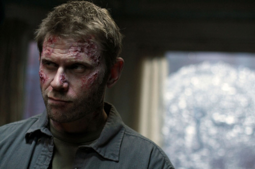

Легенда о Люцифере в сериале Сверхъестественное

Есть на свете очень красивая легенда о падшем ангеле. Это прекрасное светлое создание влюбился однажды в земную женщину. Он не мог быть с ней на земле, а она даже не догадывалась о чувствах ангел. Так проходили дни и ночи, когда ангел просто смотрел на прекрасные черты девы. За свои чувства Ангел был наказан и выгнан с райских небес. Находясь под землей, падший Ангел больше не мог смотреть на возлюбленную, любоваться ее чертами. В это время Архангелы, знающие о привязанности своего низверженного собрата, умоляли Господа, чтобы тот пощадил Ангела и позволил ему вернуться. После Бога начали умолять все Архангелы, и Господь смиловался, зная, что это не сможет уже ничего изменить. Ангел получит разрешение осматривать Землю раз в сто лет. Но это не позволило ему видеть любимую больше никогда. Ведь человек не может прожить так долго и оставаться также долго в прекрасном облике. Но зато Бог позволил сохранить Ангелу его боль и тоску. Этим влюбленный был наказан дважды.
Согласно легенде, это был ни кто иной, как Люцифер. Понятно, что изложение немного приукрашено и до наших дней эта печальная история дошла уже немного в другом формате. Но на самом деле ведь Люцифер действительно изначально был Ангелом, но после того, как он искусил Еву (Хаву), он лишился своего звания. Из двенадцати крыльев Падшему Ангелу оставили только шесть. И это вовсе не было изгнанием в преисподнюю, а неким понижением в должности.
Образ Сатаны, или Люцифера, или Самаэля пришел в христианство из индуизма. Здесь Он имеет три поста – искуситель, обвинитель и Ангел смерти. То есть изначально Люцифер искушает, если ему это удается и человек впадает в грех, то перед Богом он обвиняет грешника, и когда человек уходит в мир иной, то Люцифер приходит за ним с ножом, окроплённым ядом.
Впервые Ангел-обвинитель встречается в Книге пророка Захарии. Здесь Сатана стоял по правую руку Господа, чтобы противодействовать стоящему по левую руку Иисус.
Сатана встречается и в Книге Иова, где он тоже служит Господу, но без его позволения не имеет права принимать решения. Он совершенно не может противостоять ему, как это считается в обыденном мире.
Наверченное звание князя Тьмы Люциферу было присвоено людьми, писавшими эти самые священные книги, мифы и сказания. Зачастую человек попросту преследовал свои весьма прагматичные цели.
Однако многие современные фильмы и прочие порождения культуры все-таки не желают изменять привычного людскому сознанию понимания Люцифера. В сериале «Сверхъестественное» он по-прежнему является Князем тьмы, неким главным злодеем потустороннего мира, желающего навести на Земле свой порядок.
В 22 серии 4-го сезона Люцифер высвобождается из заключения. И, конечно же, главную роль во всех этих событиях играют братья Винчестеры. Однако не так уж отдалились режиссеры сериала от настоящих реалий жизни. Совершить задуманное Ангелам и демонам помог введенный в заблуждение Сэм. Они весьма виртуозно сыграли на его психике – нежелании подчиняться старшему брату, мечте отдалится от неудачной семьи и желании быть нормальным, а точнее лучшим по сравнению со своим родственниками.
Серия начинается тем, что Сэм ругается со старшим братом и уходит с с демоншей Руби выполнять свое призвание по предотвращению Апокалипсиса. Однако Сэм много не знает и вскоре он пожалеет, что совершил такую непоправимую ошибку. Дин в это время мучается от произошедшего скандала, но позвонить не решается, так как сказал брату перед уходом, что тот впредь может не возвращаться.
Бобби пытается убедить Дина в том, что семья должна быть выше всех принципов и обид. И что если не Дин, то уберечь Сэм от глупостей будет просто некому, ведь грядет нечто страшное, против чего смогут выстоять только эти два брата.
Однако разговору не суждено было завершиться. Дин переносится в прекрасную залу, где на величественном столе заготовлены любимые для него чизбургеры и пиво во льду. Всю эту залу правильней бы было назвать закулисьем, где Винчестеру старшему вместе с Захарием и Кастиелем предстоит выжидать заготовленного всем происходящим событиям конца. И дело, как выясняется, вовсе не в том, чтобы избежать выхода заточенного Люцифера. А в том, чтобы помочь ему освободится, а после сразиться с силами тьмы и одержать победу раз и навсегда.
Дина же очень мучает вопрос, что будет с людьми после такого великого сражения. Оказывается, судьбы человека волнуют лишь его одного. Ни Ангелам, ни демонам даже не приходит в голову заботиться о простых смертных.
Сэму в ряде этих всех событий уготовлена своя важная роль. Он должен убить Лилит, которая и является последней печатью. Узнавший об этом Дин просит Кастиэля перенести его к брату, и последний рисует на стене закулисья печать собственной кровью. Однако, переместившийся к брату, Винчестер старший опаздывает. Сэм уже находился в монастыре Святой Марии в Ильчестере. Когда-то именно в этом монастыре Винчестеру младшему уготовили его судьбу, расписали от начала до конца.
Убивший Лиллит Винчестер понимает, что демон Руби обманула его, ввела в заблуждение, так как другим не удалось. Он хватает Руби за руки и в это время в помещение залы монастыря врывается Дин и вместе они убивают демона. Однако это уже не избавит мир от наступающего Апокалипсиса.